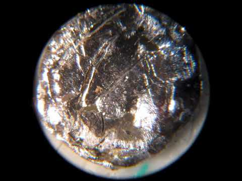

Америций
Амери́ций (химический символ — Am, от лат. Americium) — химический элемент 3-й группы (по устаревшей классификации — побочной подгруппы третьей группы, IIIB) седьмого периода периодической системы химических элементов Д. И. Менделеева, с атомным номером 95.Относится к семейству актиноидов. Америций — четвёртый синтезированный трансурановый элемент. Все изотопы радиоактивны.
Элемент был получен искусственно в 1944 году в Металлургической лаборатории Чикагского университета Гленном Сиборгом с сотрудниками, причём открытие было засекречено. Интересно, что об открытии америция и кюрия Сиборг впервые публично объявил на детской радиопередаче Quiz Kids, когда один из слушателей спросил его, какие трансурановые элементы были открыты во время войны. Официальное сообщение об открытии на совещании Американского химического общества последовало только через пять дней после радиопередачи, 11 ноября 1945 года.

Америций – серебристо-белый металл с гексагональной решёткой, tпл 995±5 °C, tкип 2607 °C, плотность 13670 кг/м3; из-за высокой радиоактивности америций и его твёрдые соединения светятся в темноте. Конфигурация внешних электронных оболочек атома 5f76s26p67s2; в соединениях проявляет степени окисления от +2 до +7, в растворах наиболее устойчива степень окисления +3. 241Аm и 243Аm получают при облучении 239Рu нейтронами в ядерных реакторах. Смесь 241Аm с бериллием 9Be применяют в качестве источника нейтронов. Америций и его соединения высокотоксичны.